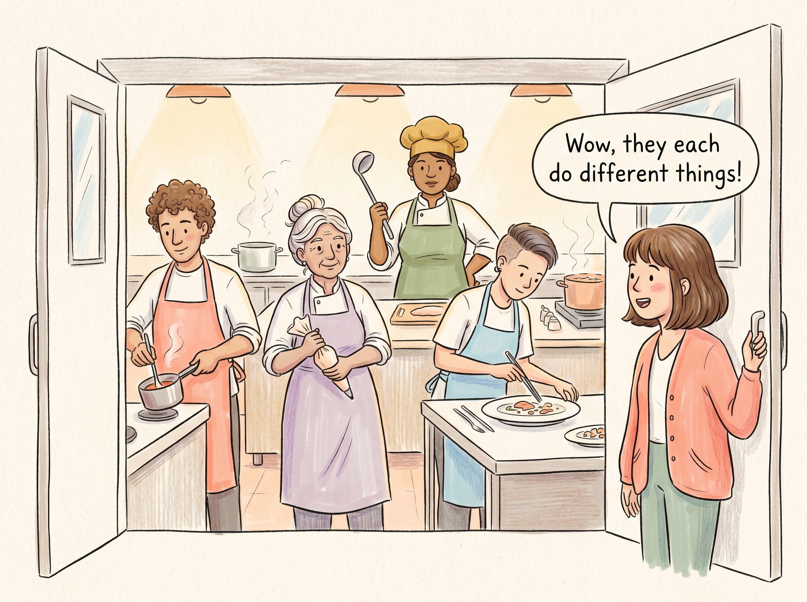
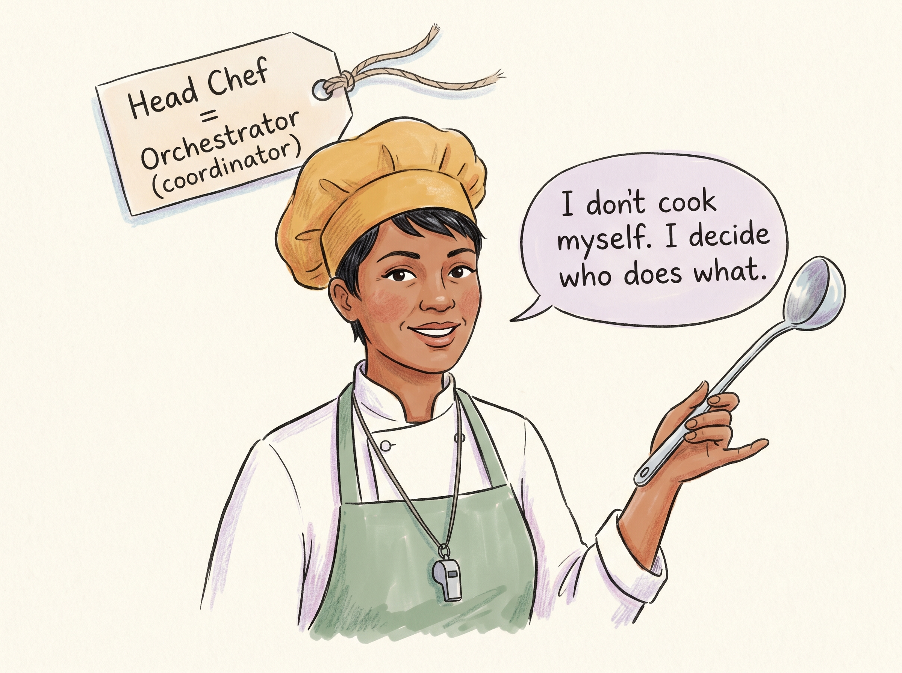
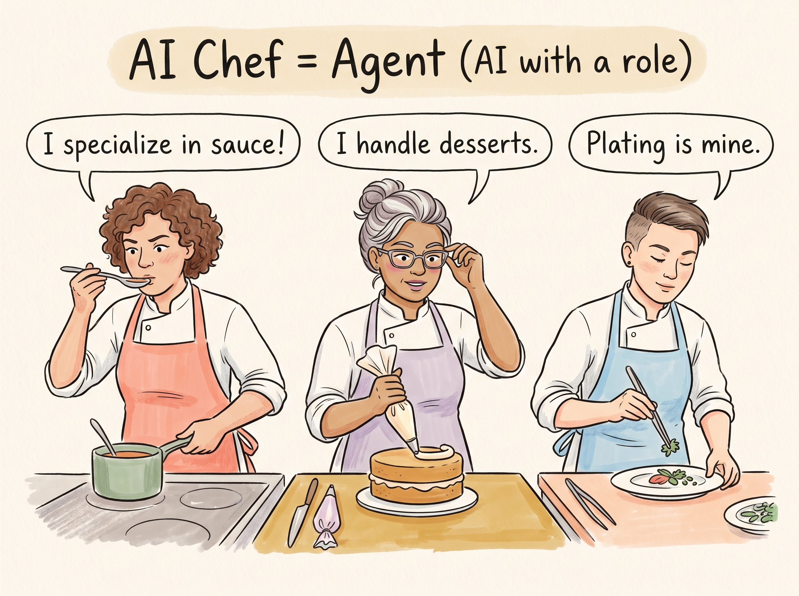
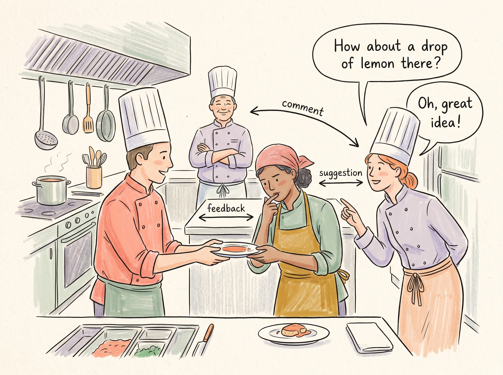
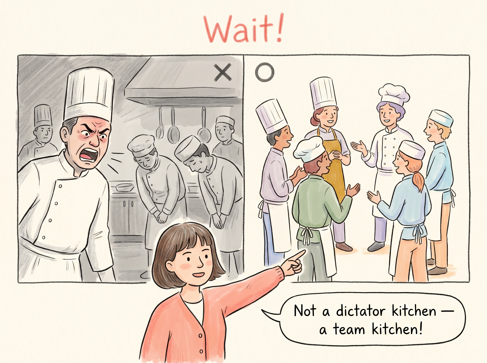
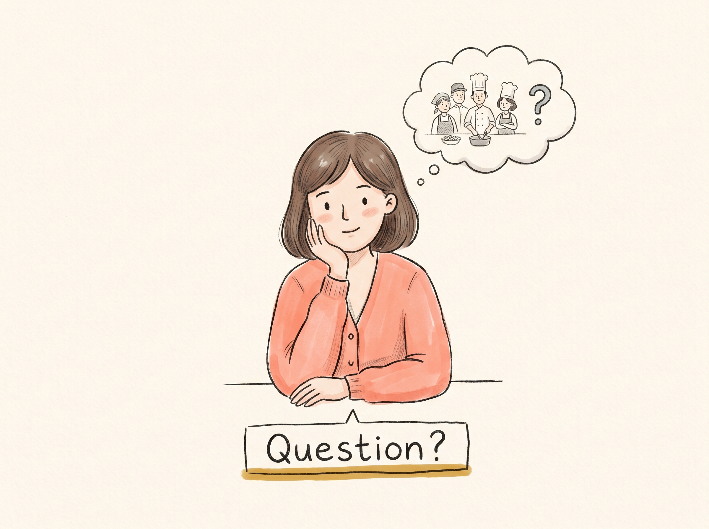

EP2-P1
팀 주방 입장

Ana:우와, 각자 다른 일을 하고 있네!
여긴 호통치는 독재 주방이 아닙니다.
[선단서] 위계가 아닌 협업 팀 프레임 1차 각인.
EP2-P2
헤드셰프 소개 — 오케스트레이터

헤드셰프:나는 직접 요리 안 해. 누가 뭘 할지 나누는 거지.
오케스트레이터 = 조율하는 사람
[C3] 오케스트레이터는 실행자가 아니라 조율자.
EP2-P3
셰프들 소개 — 에이전트

소스 셰프:난 소스 전문!
디저트 셰프:난 디저트 담당이에요.
플레이터:담기는 내 몫.
에이전트 = 각자 역할을 맡은 AI
[C1] 에이전트는 역할을 부여받은 AI. 챗봇과 다르다.
EP2-P4
협업 장면 — 코멘트가 오간다

디저트 셰프:거기 레몬 한 방울 넣어볼래?
소스 셰프:오, 좋은 생각!
서로 코멘트하며 한 접시를 만들어갑니다.
[M5·M18 방어] 위계가 아닌 수평 협업. 에이전트끼리 피드백.
EP2-P5
잠깐, 이건 아니에요! — 오개념 교정

Ana:독재 주방이 아니라 팀 주방이에요!
오케스트레이터는 명령하는 사람이 아니라 조율하는 사람입니다.
[오개념 교정] M5(상명하복) + M18(절대 복종) 동시 교정.
EP2-P6
마무리 — 생각해보기

[생각해보기] 에이전트와 챗봇, 뭐가 다를까요? 힌트: 역할이 있느냐 없느냐!
[자가 점검] 에이전트와 AI 중 어느 쪽이 더 좁은 개념인지 생각 유도.